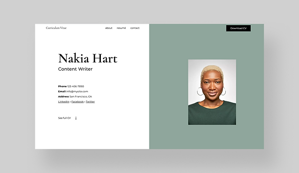
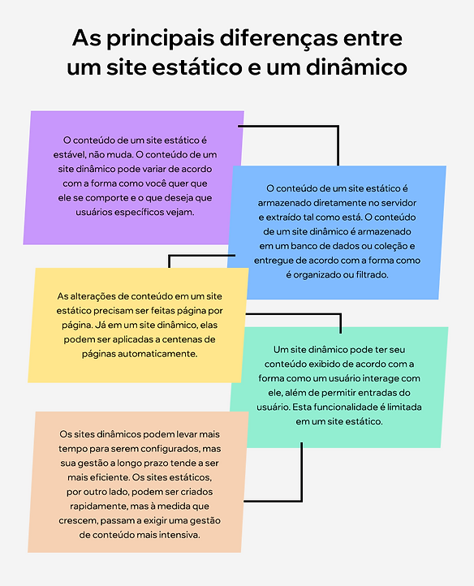

Páginas Estáticas e Páginas Dinâmicas
-O que é um site dinâmico?
-
Criados utilizando linguagem e tecnologia do lado do servidor, os sites dinâmicos permitem que o conteúdo de
cada página seja entregue e exibido dinamicamente, ou on the fly, de acordo com o comportamento do usuário ou
a partir de conteúdo gerado pelo usuário.
Com um site dinâmico, todos os seus dados e conteúdo são organizados em um banco de dados ou sistema de
gerenciamento de conteúdo (CMS) de back-end, que se conecta às páginas do seu site. A forma como essas informações
são organizadas e conectadas ao design do seu site controla como e quando seu conteúdo é exibido em uma página.
O que tudo isso significa? Bem, sites dinâmicos oferecem a possibilidade de personalizar o conteúdo do site para um
usuário específico. Eles também permitem que você faça alterações em várias páginas ao mesmo tempo, pois as modificações
feitas em uma página dinâmica podem ser automaticamente aplicadas a milhares.
-O que é um site estático?
-
Um site estático é composto de páginas da web criadas usando HTML, CSS e Javascript (todos exemplos de linguagens de desenvolvimento web).
Cada página de um site estático é armazenada como um único arquivo HTML, que é entregue do servidor diretamente para a página da web da forma como está.
Esse conteúdo se torna parte do design da sua página e não mudará a menos que o arquivo HTML original seja editado usando código.
As alterações em um site estático podem ser feitas manualmente, e somente página por página, arquivo HTML por arquivo HTML.
Por exemplo, as edições feitas no arquivo HTML de uma página inicial serão refletidas apenas na página inicial.
Isso é válido mesmo para elementos idênticos no site, como o rodapé. Se você estiver usando um criador de sites,
as alterações nas páginas estáticas serão feitas automaticamente toda vez que você usar o editor do site.

